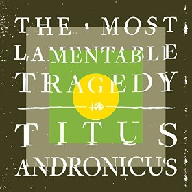
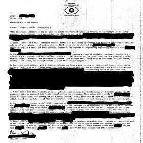
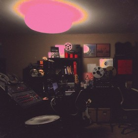

By David Smith. Posted in Ambient, Analysis and Opinion, Blues, Classical, Drone, Electronic, Experimental, Folk, Jazz, Pop, Rock, World | No Comments »
Can it be a year since the last list? Here goes with my favorite 20 releases of 2017. Your tastes are not mine, you will disagree, but maybe there is something here that you might not have discovered, something of beauty that might bring you joy. At one point I thought this might be a thin year; when I got down to making the list I realized there was no filler at the bottom. Exact placement is fuzzy – there are lots of apples and oranges being compared here. Feel free to move any of these up or down a few places in your head.
 #1. Taylor Deupree – Somi
#1. Taylor Deupree – Somi
Deupree’s Faint from a few years ago is still one of my regular listens and pleasures, and I wonder with hindsight if I should have placed it at number one that year. He gave me another chance with the magnificent, meditative Somi. Loops of single notes from acoustic instruments played at varying intervals are layered and treated to create a fascinating slow dance of beauty and rest. And the deluxe edition packaging was as gorgeous as the music. (Listen)
Read more »
Saw a lot of live music this year, with well over 100 different bands represented. These were the best of the bunch:
Read more »
By Craig McManus. Posted in Dance, Electronic, Experimental, Garage, Hip Hop, Indie, Pop, Post Punk, Psychedelic, Punk, R&B, Rap, Reviews, Rock | No Comments »
25. Waxahatchee – Ivy Tripp
Ivy Tripp is DIY singer/songwriter that draws on Katie Crutchfield’s punk past. Lyrically, the album continues her exploration of feminist ideas, and uses her experiences, or more specifically her mistakes, to demonstrate how a strong, independent woman is formed in today’s society.
Read more »
Titus Andronicus – The Most Lamentable Tragedy
The Most Lamentable Tragedy is a double, concept album focusing on a protagonist dealing (like Titus Andronicus frontman Patrick Stickles) with mental illness. Stickles has been actively working on TMLT for about the last 4 years, but in many ways the album has been foreshadowed (both thematically and musically) for the band’s entire existence.
Lyrically, TMLT is dark and beautiful, despairing and hopeful, and will move many to tears. Divided into 5 parts, the lyrics follow the unnamed person through all the ups and downs of manic depression: Breakdown, treatment, prescriptions, the highs and lows that still affect everything you do, and how to connect with your loved ones who, despite their best efforts, can’t begin to understand what you’re going through. Mostly, though, the album is about the internal war between a person and himself, and this war does not have a happy ending.
Read more »
Omar Souleyman – Bahdeni Nami
The best known Syrian dabke wedding singer, now based in Turkey due to the Syrian civil war, is back with his second studio recording following 147,692 (number approximate) tape releases in his native country. Souleyman, who uses electronics and his soulful voice to craft fun, incredibly danceable tunes, again worked with Four Tet’s Kieran Hebden on Bahdeni Nami and the album does not disappoint. Souleyman’s lyrics are, of course, in Arabic, so very few native English speakers will be able to understand them, but the sound of his voice blends so well the music’s high pitched keyboard sounds that their meaning is really irrelevant. All that matters is the music irresistibly makes hips shake and heads bob.
Read more »
Desaparecidos – Payola
Conor Oberst is a busy man. He has his solo work, he’s the frontman of Bright Eyes, a member of Monsters of Folk, a founder of Saddle Creek Records, etc. etc. etc. His hardest hitting job, though, is as the front man of punk band Desaparecidos. The band was originally formed in 2001 and released Read Music/Speak Spanish the following year before disbanding. In 2010, the band reformed and started releasing occasional singles, which have been compiled (and added to) on Payola, an album of 14 2-3 minute bursts of pure punk rock. A listener who goes into Payola expecting the gentle sounds and confessional lyrics of most Oberst projects will be taken aback by the distorted guitars and political ideas, but Oberst isn’t posing here. He commits fully to the punk ethos and creates a record with depth, breadth, and a whole lot of fun.
Read more »

Fucked Up – Year of the Hare
Toronto hardcore punks Fucked Up have a tradition of an annual EP release based on the Chinese Zodiac. Interestingly, despite being a hardcore band, each of the Zodiac EPs sees the band try out long, sprawling tracks and Year of the Hare is no exception. Stretching to a mammoth 21 and a half minutes, the title track opens with nearly 7 minutes of guitar picking/strums and gentle piano before the band and Pink Eyes’ vocals enter in. Even when they do, it is not a hardcore thrash (although Pink Eyes still sounds as guttural as ever until he drops out in favor of guest vocalist Isla Craig), but a fairly traditional rock song until about the 17 minute mark when the guitars ramp up, cut out completely at about 18:30, roar back with a vengeance, and then end the track the way it began. It’s a fascinating listen, as is b-side “California Cold”, which features…flutes? And drones? This band is the best.
Read more »
Unknown Mortal Orchestra – Multi-Love
In May 2014, as he was preparing to write and record Unknown Mortal Orchestra’s third album, Ruban Nielson and his wife welcomed a third person into their home and marriage. Due to United States immigration laws, Nielson and his wife have since returned to being a traditional couple, but as the title makes clear, the experience of 2014 had a massive influence on Multi-Love. The album’s music is the familiar psych pop of UMO’s first two releases, but the lyrics focus largely on Nielson’s emotions as he attempted to navigate a summer of polyamory. Taken together, the music and lyrics form an incredibly raw whole that is both beautiful and terrifying.
Read more »
Shamir – Ratchet
Shamir has been the next big thing in dance pop for a minute now, going from unknown to releasing a single on small NYC label Godmode to signing with indie titan XL Recordings in the blink of an eye. Happily, Ratchet is a worthy capstone to such a meteoric rise. Largely made up of very of the moment synth and drum machine sounds, but highlighted by Shamir’s contralto vocals, Ratchet is sexy, smooth, laid back fun. In other words, it’s summer party music at its finest.
Read more »
The Tallest Man on Earth – Dark Bird is Home
Swede Kristian Matsson has been making singer/songwriter folk as The Tallest Man on Earth since 2006, but Dark Bird is Home is easily his grandest. Featuring a full band for the first time, including horns and even some electronics, Matsson has added a richness and depth to his music that often puts the album more in the vein of The Decemberists than his usual comparison of Bon Iver. His true strength, however, remains as a poet, and the album is chock full of wordplay like “And I’ve already grown up here, here I might as well grow down” (from “Little Nowhere Towns”). This combination of orchestration and lyrics makes Dark Bird is Home an absolute gem.
Read more »

{kind=link}
{kind=link}
{kind=link}
{kind=link}
{kind=link}
{kind=link}
{kind=link}
{kind=link}